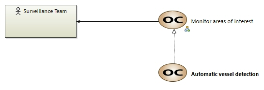

Automatic vessel detection
OperationalCapability
Drone project > Drone project > Operational Analysis > Operational Capabilities > Automatic vessel detection The client requires automated detection of vessels in designated maritime regions.The client needs the system to automatically detect vessels entering or operating within targeted maritime regions using state‑of‑the‑art sensors and advanced detection algorithms. For instance, when a vessel crosses a virtual boundary near known smuggling routes, the system must instantly register its presence. This capability minimizes manual oversight by continuously scanning large areas and differentiating between routine traffic and vessels that may be linked to illicit activities, even in adverse weather conditions or low‑light scenarios.
Owned diagrams
COC Automatic vessel detection
